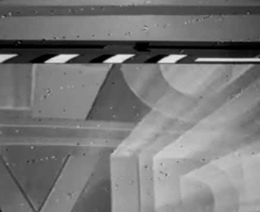

«The So-Called Grey Area»
- !Chapter I — Culture Digital
- !Chapter II — Copyright Legalities and Illegalities
- !Chapter III — Amateur!
- !Chapter IV — Piracy Portals
- !Chapter V — Access
Fig.1 - Dobusch, Leonhard. "Digitale Remixkultur" in "Public Domain", S68. Zürich.

Fig.2 - Copyright Protection Image Distortion.
Styling intercepted from nytimes.com, zeit.de, volkskrant.nl, nzz.ch & foxnews.com